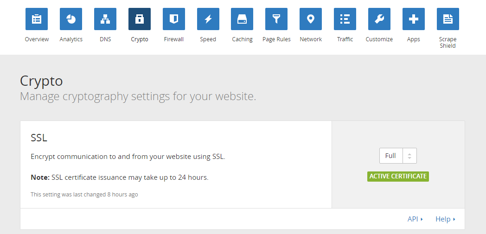

Github Pages 是一个 Github 平台的子项目，可以用来托管静态页面，所以便被一些人用来搭建自己的个人博客了。这里的静态博客页面可以自己手写，也可以通过各种静态页面生成工具生成（例如：使用 Gitblog 创建博客）。
1. 创建你的 Github 帐号
没什么好说的，在 github.com 新建一个帐号就行
2. 设置静态页面的存放仓库
这里有两种方式：
- 在 Github 中建立一个名为
{username}.github.io的仓库（{username}对应的是 Github 账户的用户名）, 之后在这个仓库中的任何网页文件都可以通过网址{username}.github.io来访问到，这样我们就可以使用这个页面来作为我们的博客网页存放仓库了，之后所有的网页只要存放在该仓库中就可被访问到。 - 在 Github 中随便建立一个仓库，然后给这个仓库新建一个名称为
gh-pages的分支，在这个分支下面的所有的网页也可以通过网址{username}.github.io/{repository_name}来访问的到。
在这里推荐第一种方式，因为我们毕竟没有真正的项目要存放在仓库中，我们只需要存放个人静态网页而已。第二种方式更一般的是作为一个项目的说明页面用来存放网页的。
3. 自定义域名
如果想要设置自定义域名访问自己的博客，可以把域名的 DNS 解析设置为CNAME（在域名服务提供商的后台操作面板中可以进行设置），然后指向{username}.github.io。接着我们在{username}.github.io这个仓库中添加一个 CNAME 文件，在 CNAME 文件中写入你要解析的域名即可，稍等片刻之后，你就会发现你可以通过你的自定义域名访问的你的Github Pages个人博客了。
4. 为个人博客添加 HTTPS 协议访问
得益于大陆网络运营商对于网站 HTTP 请求和响应的劫持，现在越来越多的网站服务提供商开始使用 HTTPS 协议来构建自己的网站。
HTTPS 协议是一种在运行在 SSL 协议之上的安全的协议，可以有效的避免传输的数据被窃取或监听。接下来我们就要给我们的个人博客添加上 HTTPS 协议。
Github Pages 是支持 HTTPS 协议的，但是因为我们无法操作 Github Pages 的服务器，所以也就无法在服务器上直接添加安全证书。这里有一个免费并且十分方便的方法来解决这个问题。
CloudFlare 为用户提供了免费的 HTTPS 安全证书，并且在目前看来依然还在稳定的提供服务。
- 注册了 CloudFlare 的账号之后，按照提示走，你会被提示输入一个域名，在这里直接输入你自己购买并且已经解析到了你的个人博客上的自定义域名，点确认，CloudFlare 就会开始解析该域名的信息。
- 大约 1 分钟后，CloudFlare 会给出你的域名解析结果，查看结果无误，一直点击下一步知道进入最终的结果界面。此时 CloudFlare 会给你提供新的 DNS 解析路径，所以你需要把你自己注册的域名的 DNS 服务器更改为 CloudFlare 提供给你的服务器，更改完之后稍等几分钟，在 CloudFlare 界面中应该就能看到如下的页面了：
- 你可以在 CloudFlare 的操作面板中做各种各样的个性化的设置，这里 SSL 的等级建议设置为
Full，然后你就发现你可以通过 HTTPS 来访问你自己的博客了。 - 如果想要禁止访问自己的非 HTTPS 的博客页面，可以在网页代码中 插入如下的代码来对 HTTP 请求作出重定向即可：
"https:"!=window.location.protocol&&(window.location.protocol="https:")
